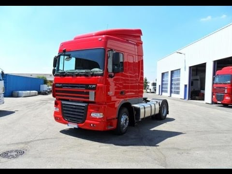

Адреса: вул. Гніздовського 1, м.Львів Телефон: 050-373-02-23 Контактна особа – Тарас Телефон:050-649-71-44 контактна особа - Володимир Кваліфіковані співробітники забезпечують якісний ремонт вантажних машин в найкоротші терміни. Ми постійно розширюємо спектр надаваних послуг. Фірма укладає договори на сервісне обслуговування вантажної техніки не тільки з підприємствами, але і з індивідуальними підприємцями та фізичними особами. Наш центр має склад запасних частин для вантажних автомобілів, що дозволяє найбільш оперативно здійснювати ремонтні та профілактичні роботи і гарантує їх високу якісне виконання
